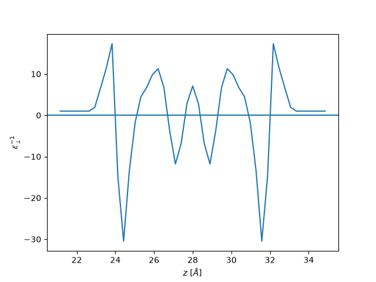
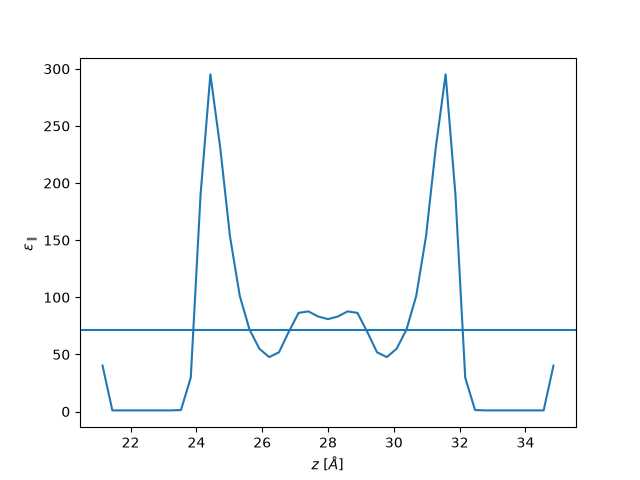

Note
Go to the end to download the full example code.
Dielectric Profile Calculations from Applied Field¶
This tutorial demonstrates how to calculate dielectric profiles using the applied field method, where an applied electric field simulation is used to compute dielectric profiles for planar geometries.
Note
In contrast to the fluctuation-dissipation formalism, this method necessitates one to run three simulations for a full determination of the dielectric profiles. First, one needs to run a simulation with no applied field for reference. Then, two additional simulations are run with an applied field in the parallel and perpendicular directions, respectively.
import matplotlib.pyplot as plt
import MDAnalysis as mda
import numpy as np
import scipy.constants
import maicos
Next, we define the formulas for the calculation of dielectric profiles. These are given by the following equations, first for the parallel component:
and for the perpendicular component:
where \(D_{\perp} = \epsilon_0 E\) is the electric displacement field, \(m_{\perp}\) is the perpendicular polarization density, and \(m_{0, \perp}\) is the reference perpendicular polarization density.
unit_e = scipy.constants.e # elementary charge in C
unit_a = scipy.constants.angstrom # angstrom in m
epsilon_0 = scipy.constants.epsilon_0 # vacuum permittivity in F/m
unit_volt = 1
def direct_eps_par(m, m0, E=0.005):
"""Calculate the parallel dielectric profile."""
m0 = m0 * unit_e / unit_a**2
m = m * unit_e / unit_a**2
E = E * unit_volt / unit_a
eps0E = epsilon_0 * E # vacuum permittivity times electric field
return (eps0E + m - m0) / eps0E
def direct_eps_perp(m, m0, E=0.02):
"""Calculate the perpendicular dielectric profile."""
m0 = m0 * unit_e / unit_a**2
m = m * unit_e / unit_a**2
D = E * unit_volt / unit_a * epsilon_0 # electric displacement field
return (D - m + m0) / D
The key point of using MAICoS for this calculation is that it allows us to access the parallel and the perpendicular components of the polarization density, which are needed for the calculation of the dielectric profiles. For this, we need to run the dielectric module as we would do in the case of the fluctuation-dissipation formalism, once for the reference (no field) simulation and then twice for the applied field (parallel and perpendicular).
Warning
Because we measure the response (which might be only a small delta between reference and applied field simulations), we need to ensure that the bin locations are exactly the same for all three simulations.
Here, we have a universe with vacuum added in the z direction for the Yeh-Berkovitz correction which we remove before in order not to slow down the calculation with empty space.
def write_means(fn, eps):
"""Function to save the relevant polarization densities into a txt file."""
eps_means = [eps.means[m] for m in eps.means if "m_" in m]
# Only read in the x-component, because the field is in this direction
eps_means[0] = eps_means[0][:, 0]
eps_means = np.array(eps_means)
np.savetxt(fn, eps_means, header="cols: m_par mm_par m_perp mm_perp")
# This code calculates the polarization densities for the simulation
# with no applied field, we use the output of a precalculated trajectory
u = mda.Universe("./graphene_water.tpr", "./graphene_water_nofield.xtc")
eps = maicos.DielectricPlanar(
u.select_atoms("resname SOL"),
bin_width=0.3,
unwrap=False,
zmin=u.dimensions[2] / 2,
zmax=u.dimensions[2] / 2 + u.dimensions[2] / 3,
)
eps.run()
write_means("m_nofield.dat", eps)
/home/runner/work/maicos/maicos/src/maicos/core/base.py:602: UserWarning: Your data seems to be correlated with a correlation time which is 6.23 times larger than your step size. Consider increasing your step size by a factor of 12 to get a reasonable error estimate.
self.corrtime = correlation_analysis(self.timeseries)
This gives us the polarization densities for the reference simulation. The perpendicular density is one dimensional, the parallel density is two dimensional (x, y directions). For the applied field simulations, we need to take the parallel component in the direction of the applied field.
Now we can do the same for the applied field simulations.
Example code for applied field simulations
In order to save on time and storage, we only show here the code that would be needed to do so.
u_par = mda.Universe("graphene_water.tpr", "graphene_water_par.xtc")
eps_par = maicos.DielectricPlanar(
u_par.select_atoms("resname SOL"),
bin_width=0.3,
unwrap=False,
zmin=u.dimensions[2] / 2,
zmax=u.dimensions[2] / 2 + u.dimensions[2] / 3,
)
eps_par.run()
m_par = eps_par.means["m_par"][:, 0] # the field is applied in the x direction
write_means('m_parfield.dat', eps_par)
u_perp = mda.Universe("graphene_water.tpr", "graphene_water_perp.xtc")
eps_perp = maicos.DielectricPlanar(
u_perp.select_atoms("resname SOL"),
bin_width=0.3,
unwrap=False,
zmin=u.dimensions[2] / 2,
zmax=u.dimensions[2] / 2 + u.dimensions[2] / 3,
)
eps_perp.run()
m_perp = eps_perp.means["m_perp"] # the field is applied in the z direction
write_means('m_perpfield.dat', eps_perp)
m0_par = np.loadtxt("m_nofield.dat")[0, :] # first row is m_par
m0_perp = np.loadtxt("m_nofield.dat")[2, :] # third row is m_perp
m_par = np.loadtxt("m_parfield.dat")[0, :] # first row is m_par
m_perp = np.loadtxt("m_perpfield.dat")[2, :] # third row is m_perp in dir of field
This allows us to calculate the dielectric profiles using the formulas defined above. The example data was calculated for an applied field of strength 0.005 V/Å in the parallel direction and 0.02 V/Å in the perpendicular direction.
If we apply a field we introduce asymmetry in the system, so it is good practice to symmetrize the profiles. This way the profile will be the same as those determined from the fluctuation-dissipation formalism, which assumes perfect symmetry.
eps_par = (eps_par + eps_par[::-1]) / 2
eps_perp = (eps_perp + eps_perp[::-1]) / 2
plt.plot(z, eps_perp, label="perpendicular")
plt.axhline(1 / 71)
plt.ylabel(r"$\varepsilon_{\perp}^{-1}$")
plt.xlabel(r"$z$ [$\AA$]")
plt.show()

plt.plot(z, eps_par, label="parallel")
plt.axhline(71)
plt.xlabel(r"$z$ [$\AA$]")
plt.ylabel(r"$\varepsilon_{\parallel}$")
plt.show()
